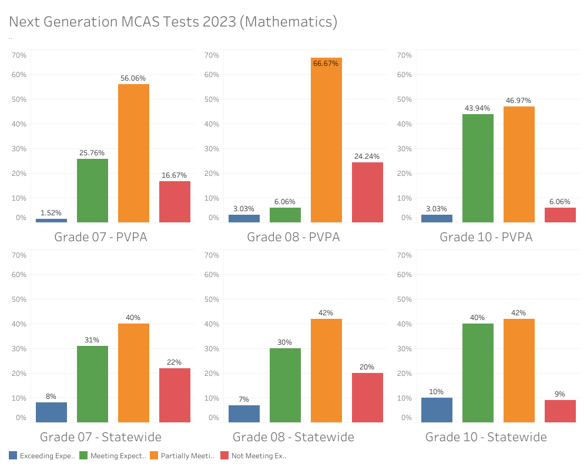
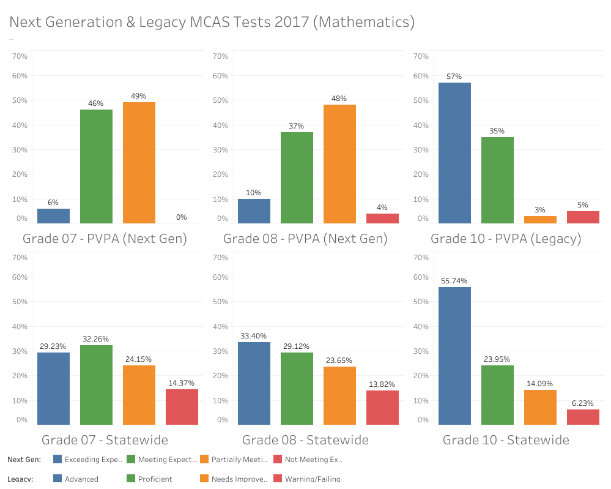
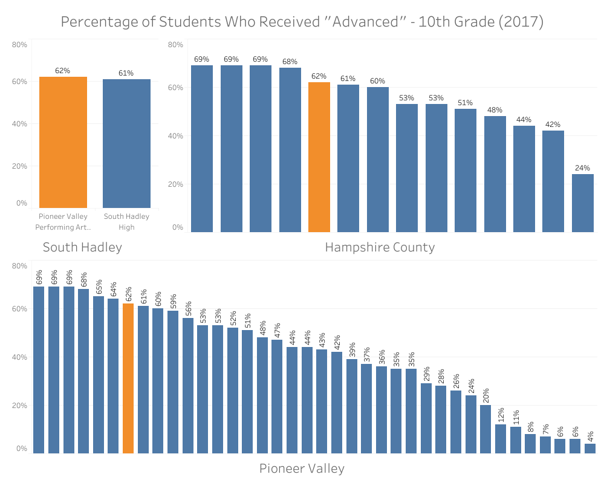
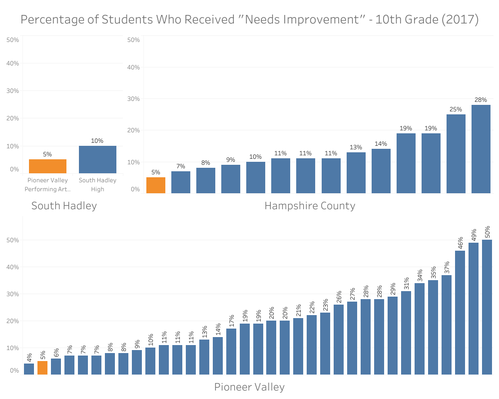

In Spring, my mathematics department discussed our students' recently released MCAS scores (grades 7, 8 and 10). MCAS scores are important to consider due to their implications about student learning. Students are also required to pass MCAS tests in 10th grade in order to graduate from high school. The state of Massachusetts uses MCAS scores as benchmarks not only for student learning but for schools' performance as well. The MCAS test changed in 2017--the old, 2017 and earlier version is now referred to as the "Legacy" test and the newer version is called the "Next Generation" test. I took publicly available data regarding 2017 and 2023 MCAS scores from a .csv file online as well as from my team and the MA Department of Education’s website for this project.
My goal was to use the data to compare my school, Pioneer Valley Performing Arts, to the rest of the state in terms of mathematics MCAS scores.
To get an idea of how PVPA students did, I imported the data into Tableau and created some bar graphs with the x- and y-axes as achievement level and percentage of students, respectively. I started with a PVPA-specific y-axis and then made similar graphs with the statewide averages. In Tableau, I had to add table calculations to get percentage outputs from the PVPA raw score inputs, import percentage values directly from the DoE data, and add some dashboard formatting to make the visualizations easier to read.
In the 2023 visualizations, we can see from the graphs that PVPA has a consistently lower percentage of students who exceeded expectations. For those who met expectations, the percent of 7th and 10th grade students is quite similar between PVPA and the state, considering that the PVPA 7th graders are only about 5 percent fewer than the state average and there are about 4 percent more PVPA 10th graders than statewide at this achievement level. In 8th grade, however, we see a whopping 25 percent fewer PVPA students meeting expectations than the state. Another striking difference between PVPA and the state is the greater percentage of PVPA students across all three grade levels who partially met expectations. At this achievement level, the state has 40 or 42 percent of its students in each grade level while PVPA students make up about 56, 67, and 47 percent in 7th, 8th, and 10th grade respectively. All six of the 2023 graphs appear to be skewed left with both PVPA and state 10th grade much closer to a normal distribution than the other grades, suggesting that generally more 7th and 8th grade students scored on the lower end while 10th graders’ scores are centered symmetrically around the middle.
With the 2017 data, I set out to match my 2023 visualizations and make similar interpretations. Here, I had to set up calculated fields in Tableau to compute the percentages of students at each achievement level. I coded in some basic averages e.g.
SUM([MCAS 10thGrade Math A #])/(SUM([MCAS 10thGrade Math A #])+SUM([MCAS 10thGrade Math NI #])+SUM([MCAS 10thGrade Math P #])+SUM([MCAS 10thGrade Math W/F #]))
and used “format number” to make Tableau output the results as percentages before formatting the graphs into concise dashboards.
This data appears to be confounding. When comparing PVPA and the state, the 2023 data follows a loosely similar shape and here it does not. First, we can see in the PVPA data that grades 7 and 8 have a similar, more centered shape that is much different from that of grade 10 which is skewed right. The 10th grade scores tend to include significantly more on the higher end, most likely due to the fact that passing is a requirement for graduation. This trend can be seen in the 2023 data too. Crucially, another factor at play here is the difference in the tests themselves. Since the Next Generation MCAS test made its debut in 2017 only in grades 3-8, we should expect to see a difference in performance between middle school and high school scores, such as fewer scores on the high end resulting in a skew left, like we saw clearly in the 2023 statewide data. Except the statewide 2017 middle school data doesn’t follow that pattern. Instead, the middle school graphs have the same shape as the high school graph, with quite a few more percentage points in the higher achievement levels than we should anticipate. Furthermore, the PVPA and state 10th grade graphs are quite similar.
So, the middle school data raises some red flags. I took a closer look at the 2017 data to find out why. I noticed that the middle school data is recorded in Legacy scores (advanced, proficient, needs improvement, and warning/failing), but every middle schooler across the state took the Next Generation test that year. I went straight to the source and dug through the MA DoE website and found some 2017 test score data. The percentages didn’t match up (the data from other years does in fact seem to match). So, the 2017 middle school values in the data source I used are flawed. Though, the incorrect values are actually somewhat similar to previous years’ Legacy test scores. Perhaps the compiler of this data source took averages from previous years and inserted that into 2017 instead of using next gen scores, in order to keep some standardization amongst the data, but I can only guess.
One of the things we spoke about in our department meetings around MCAS was the amount of students that scored “exceeding expectations.” PVPA students have fewer of these scores than the state, which is also true in 2017 and especially true for the middle school grades. This is something that is evident in my Tableau visualizations–the PVPA graphs are more dense in the center and less dense on the ends.
I wondered if there exists a similar pattern on a smaller scale. To find out how PVPA stacks up locally, I used the 2017 data available to me to compare PVPA on three levels: town (South Hadley), county (Hampshire), and region (Pioneer Valley). I created graphs with x as schools and y as percent of students. Filtering the “town” measure created a tick box list that allowed me to show the percentages for whichever towns I needed for each of the three local levels. Finally, I added formatting to make the graphs more presentable and easy to read, such as excluding null values, adding visual highlighting, normalizing axis scaling, and removing clutter by reformatting headers, captions, and titles. From there, I could make my comparisons.
 